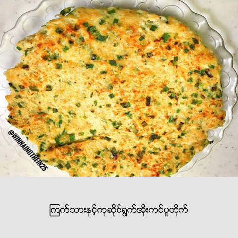

သံပရာအုန္းႏို႔ထမင္းက အအီေၾကာက္သူမ်ားႏွင့္ အုန္းႏို႔စားလွ်င္ ေသြးတက္တတ္သူမ်ား အတြက္ အဆင္ေျပေျပ စားသံုးနိုင္ေသာ ထမင္းေလးပါ။ သံပရာနံ႔ သင္းသင္းေလးႏွင့္ ခ်က္ထားေသာထမင္းကို ႀကိဳက္ႏွစ္သက္ရာ ဟင္းျဖင့္ စားသံုးႏိုင္ပါတယ္။
- ဆန္ – ၃ ဘူး
- သံပရာသီး – ၂ လံုး (ထက္ျခမ္းျခမ္းထားပါ)
- အုန္းႏို႔ – ၂ ဘူး (အသင့္စားဘူး)
- ဆား – လက္ဖက္ရည္ဇြန္း ၂ ဇြန္း
- သၾကားညိဳ – စားပဲြဇြန္း ၁ ဇြန္း
- ေရ – ၂ ခြက္ခဲြ (ဟင္းခ်က္ရန္တိုင္းေသာခြက္)
- သံပရာခြံ – လက္ဖက္ရည္ဇြန္း ၁ ဇြန္း
အဆင့္ - ၁
ထမင္းေပါင္းအိုးထဲ ေဆးၿပီးသား ဆန္ႏွင့္ ပါဝင္ပစၥည္းမ်ား အားလံုး ထည့္ၿပီး တည္ပါ။
အဆင့္ - ၂
ထမင္းက်က္လွ်င္ ထမင္းထဲမွ သံပရာျခမ္းကို ယူၿပီး ထမင္းေပၚ ဖ်န္းေပးပါ။
အဆင့္ - ၃
ၾကက္သားဆီျပန္၊ ဆိတ္သားဆီျပန္ စသည့္ ဟင္းပဲြမ်ားႏွင့္ လိုသလို သံုးစဲြႏိုင္ပါတယ္။
Related
